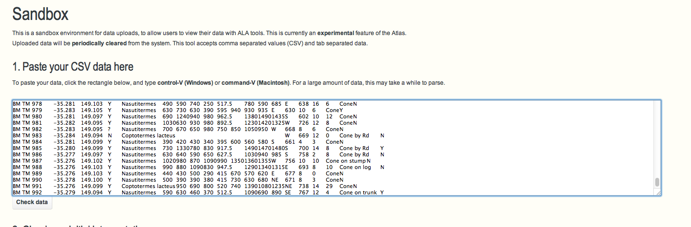

We are regularly asked about how we process and manage data. Â This blog provides a reasonably technical overview of:
- some of the processes occurrence data goes through;
- how the results of this processing are visible to users; and
- how users can explore and filter data to be “fit for purpose”
Note that these processes continue to evolve over time to better detect issues and address your needs so your feedback is welcome.
General approach
Our philosophy is to:
- Preserve the original data as provided by the data provider
- Interpret the data in terms of taxonomy provided by National Species Lists, geospatial information and attribution.
- Assert additional information about the data based on a range of tests. These assertions are designed to help Atlas’ users make clear decisions about data use.
In this approach, the Atlas does not make an overall assertion about the quality of data.  This is based upon the premise that we do not know (or need to know) the purpose to which data will be put.  In other words each user’s fitness-for-purpose scenario is different - so we put as much information in the hands of the user as possible to help you make this call.
To take this point further - some data may be unusable to some users in some circumstances, but will still be valuable in other contexts. Â With this in mind, the Atlas will never restrict data from a search based on the results of the data processing, but will expose the results and allow users to filter certain data in or out of display and later analyses.

Simple diagram of some of the processes run over occurrence data
Assertions
As data is processed and ingested into the Atlas, a large number of tests are run against the data. Â These result in assertions about the content and quality of the data. Â All the assertion types and descriptions of the tests are outlined in this spreadsheet.
The results of the tests and assertions are visible on a record page and can also be used in searches as well as including or excluding records from display or analyses - as per the following screenshots:

Listing of tests run on a record page

The "record issues" facet which can be used to include/exclude records with specific assertions

Mapping of Acacia acuminata with the record issues facet selected. The occurrence points are coloured by issues detected with the records. Within the spatial portal, users can select records with/without issues and produce a layer from this selection
Taxonomy
The taxonomy provided with the original occurrence record can vary from a scientific name to a classification from subspecies to kingdom.  Scientific names are parsed using the useful java GBIF ECAT name parser library developed by GBIF. This code extracts the key components of the name (generic, specific epithet, authorship etc) taking into account the nomenclatural rules (botanical and zoological) for scientific names. The Atlas extends the GBIF ECAT Name parser to handle Phrase Names as defined in the National Species List (NSL).  The NSL includes  the Australian Faunal Directory (AFD), the Australian Plant Name Index (APNI) and the Australian Plant Census. The classification is matched to taxa in the NSL.
The type of the name matching is classified into one of the categories on the left (as of 4/10/2013).
Taxonomic name issues that are flagged include:
- Parent concept is synonym of child: Arises when a species is divided into 1 or more subspecies and the species name is marked as a synonym to one of the subspecies.
- Match to misapplied name: A warning to indicate that the supplied scientific name has been misapplied in the past.
- Matched to homonym: During the match a homonym was detected. This will often cause the match to be applied at a higher level in the classification.
- Affinity species: The supplied scientific name included an aff. marker.
- Confer species: The supplied scientific name included a cf. marker.
- Associated name excluded: Â The scientific name is both an accepted name and excluded from another name.
- Matched to excluded species: The scientific name matched to a species that is considered excluded from Australia.
- Species plural: The scientific name was supplied with an spp. marker.
Further information about the Name Matching algorithms used by the ALA can be found in the ALA Names List wiki.
Duplicate detection
Detecting for duplicate occurrence records is one of the tests performed during data processing.  If a potential duplicate is detected, the record is flagged which then allows users to optionally discard duplicates records from searches, analysis and mapping.  A discussion  by Simon Bennett on duplicate records is available here.  Duplicates may occur in observational data due to historical data merging between datasets. For specimen data, “duplicate” may be inaccurate as there may be multiple specimens taken from the same individual or multiple specimens taken as part of the same collection event.
The Atlas uses the scientific name, decimal latitude, decimal longitude, collector and collection date to detect potential duplicate records. Here are some additional implementation details:
- Records are grouped at a species level. Synonyms are mapped to the accepted name, and the accepted name is used in this grouping.
- Collection dates are duplicates where year, month and day are identical. Paired empty values are considered identical.
- Collector names are compared; if one is null it is considered a duplicate, otherwise a Levenstein distance is calculated with an acceptable threshold indicating a duplicate
- Latitudes and Longitudes are duplicates when they are identical at the same precision. Null values are excluded from consideration.
When a group of duplicate records are identified, one record is identified as the “representative” of the duplicates. Â The representative record is the one that is the most complete in terms of geospatial information and other metadata.
The duplicate detection process is run as a batch job across all data each week.

Duplicate detection status values from the facet. Users can use this facet to select records marked as duplicates by the criteria used to associate the records.
Here is an example record that has been marked as a duplicate. In this particular case the specimens were possibly collected as part of the same collection event.Â
Associated record details for PERTH 8480311
Expert distribution outlier
As part of the work on fishmap, the Atlas worked with CSIRO CMAR to expose fish distributions. These distributions are represented as polygons where each species is believed to occur. Each distribution has been developed by an expert in the taxonomic group.
A similar suite of expert distributions has been developed for birds by BirdLife international. Both sets of distributions are used to add assertions to occurrence records that fall outside these polygons. As with many assertions, just because an assertion is made, does not necessarily mean that the record is an ‘error’. For example, in the case of these expert distributions, a new observation may extend the species range.

Distribution map for Reticulate Butterflyfish as supplied by CSIRO CMAR
The expert range and the occurrence record location are displayed on the record page:
We hope to add expert ranges for other groups as they become available. This process is run across all data each week.
Environmental outlier detection
Mountain thornbill. Image by: Tom Tarrant. Licence: http://creativecommons.org/licenses/by-nc-sa/2.0/
Environmental outlier’ detection is run across all occurrence data that has been classified to species level. In this case ‘Environmental outlier’ means that an occurrence record lies outside one or more of the expected environmental ranges of the species. This check intersects all point locations for each species with 5 selected environmental surfaces, and then runs an algorithm known as Reverse JackKnife  See here for details.
The 5 selected environmental layers were selected because, as a group, they account for most of the terrestrial environment of Australia at a 1km resolution. It is recognized that these 5 layers may not cover the significant environmental determinants of all terrestrial species, or at different scales, but it is a start. With marine species, the environmental layers are less well developed, but watch this space.
For more information about the selection of the environmental layers see Williams, K.J. and Belbin, L. and Austin, M.P. and Stein, J.L. and Ferrier, S., (2012). “Which environmental variables should I use in my biodiversity model?”, International Journal of Geographical Information Science, vol. 26, no. 11, pp. 2009-2047. DOI: 10.1080/13658816.2012.698015, http://www.scopus.com/inward/record.url?eid=2-s2.0-84867849849&partnerID=MN8TOARS
This process is run across all species each week.

Mountain thornbill records in the spatial portal
Below is a display taken from an occurrence record that has been marked as a potential environmental outlier against 3 of the 5 environments.
Records in blue are not considered outliers. The records in red are considered potential outliers for this environmental surface. The actual record being viewed is considered a potential outlier against this environment and is coloured yellow.
Query assertions (new!)
As part of the Australian National Data Service (ANDS) funded collaboration with Centre for Tropical Biodiversity & Climate Change and the eResearch Centre, James Cook University, the Atlas now supports what we are calling “query assertions”. These are pre-defined queries (based on, say - “this species in this location at this time”) that dynamically flags records if they match the query. For example, a query could be “all records for the Atlas Nematode (fictitious) in the Condamine Alliance NRM (or any polygon) with the date range of 1970 to 1980” can be flagged as for example, “introduced” or another criteria.
This gives expert users a quick way of flagging issues against a  large number of records. This type of assertion also differs from ad-hoc annotations provided for a single record (see “Flag an issue” on a record page) in that they are applied to all new data that matches an existing query assertion as it is loaded into the Atlas.
There are blog articles on the development activities for the project here and here.

Mountain thornbill records as display in the JCU edgar portal
A listing of records that have been so marked with query assertions is available here. An example record that has been marked in this way is here. The annotation also has a link to other records that have been marked with this assertion. Here is an example set of record marked with a single assertion listing.

A record marked with query assertion
This process is run weekly across all data. Note: There isn’t currently a user interface in the Atlas (web services must be used) for adding this type of assertion but we hope to add this in the near future.
Spatial validity
Records are marked as spatially suspect if they fail one or more of a subset of the spatial tests. As with other tests, users may include/exclude data with specific spatial assertions. All tests are outlined in this spreadsheet.
Examples of issues that will cause a record to be marked as suspect include:
- Coordinates given as 0,0. Typically a result of bad default values for empty database fields.
- Coordinates out of range (Latitude >90 or <-90 and Longitude >180 or <-180).
- Marine species on land or vice-versa.
- Supplied coordinates are the centre of a country.
- The coordinates given are in the centre of a State or Territory. suggesting they have been generated post collection event, erroneously by software .
- Records marked as geospatially suspect by users.
- Environmental outliers.
- Expert distribution outliers.
Automated Tests and Human annotations
The suite of Atlas tests cannot identify all errors. For example, a record may contain a valid scientific name but it may have been misnamed at the time of observation or subsequently. If the misnamed species occurs in the same environmental or spatial conditions,  it is unlikely to be automatically detected, unless other tests flag an issue. Such a naming  error may be detected for example, by a taxonomist who recognizes the record and knows about the corresponding museum specimen or a history of misnaming.
There are four possible combinations of detecting and correcting errors by automated tests and by people. Automated tests may be able to both detect and correct a range of errors as noted above. In some cases, automated tests can detect errors but cannot correct them. For example, a record may be flagged as being a genuine environmental outlier but how does one correct the location of the observation?
In summary, the automatic tests with the Atlas of Living Australia are very necessary but insufficient. Human intervention is required to design the tests and evaluate the results. In many cases, human intervention is required to detect and correct errors that the automatic tests cannot: See http://www.pensoft.net/journals/zookeys/article/5438/a-specialist%E2%80%99s-audit-of-aggregated-occurrence-records-an-%E2%80%98aggregator%E2%80%99s%E2%80%99-perspective
The Atlas therefore values all annotations to records when potential issues are detected by users. The Atlas is looking into methods that will support the bulk import of record annotations where an external analysis has been performed by taxonomic/domain experts.
The Sandbox
You can run the Atlas tests against you data by uploading it to the Atlas’ sandbox tool.  Note: The uploaded data is removed from the Atlas periodically. The tests run in the sandbox do not currently include duplicate detection, environmental outlier detection or expert distribution outlier detection - but this is another area are working on at the moment.
Article
Science Symposium presentations now available
The presentations for the science symposium are now available here:
Article
Atlas Science Symposium
Dear colleagues,
We would like to invite you to attend the Atlas of Living Australia Science Symposium to be held June 12-13 in Canberra. The Atlas has accomplished much over the past 5 years (see dashboard.ala.org.au). For example, we now have over 36 million records, nearly 500 environmental layers, images, sounds, video, and over 640 million records have been downloaded for use in over 20,000 separate events.
We will be holding a series of talks on achievements that were enabled through use of the Atlas infrastructure, and providing demonstrations and tutorials on the use of the Atlas.
Please set these dates aside so that you can join us – and pass this message on to any colleagues that you feel might be interested.
Visit the Symposium website at http://www.alass2013.com/ to register your interest in joining us and receiving regular updates on the conference planning.
Alternatively, find the link to the Symposium website on the Atlas homepage (www.ala.org.au).
John La Salle
Article
Australian BHL volunteers receive award
The BHL blog is a short article about a recognition award presented to BHL volunteers last year. The Arts Portfolio awards are held annually and are presented by the Victorian State government. Museum Victoria is continuing to support digitisation activities with a fantastic group of six volunteers.
The blogpost is here: bit.ly/RSljl6
Article
Holiday Greetings from the Atlas of Living Australia
Dear friends of the Atlas of Living Australia
I would like to take this opportunity to extend Best Wishes for the Holiday Season and a Happy and Prosperous New Year on behalf of myself and all the Atlas staff. And, as the year draws to a close, it gives me a chance to reflect on what we have achieved through the year. 2012 has been a year of significant accomplishment for the Atlas.
- Use of the Atlas website has grown to an average usage of 2000 visitors daily.
- A 3 year Atlas-funded ABRS project added 29,864 new and previously unknown species to the Australian National Species Lists (more information here).
- The Australian Virtual Herbarium (AVH) (http://avh.ala.org.au/) and Online Zoological Collections of Australian Museums (OZCAM) (http://ozcam.ala.org.au/) are fully operational portals supported within the ALA infrastructure.
- Additional portals are now available for the Australian Seedbank Partnership (http://asbp.ala.org.au/), Ocean Biogeographic Information System (OBIS) (http://obis.ala.org.au/) and Australian Microbial Resources Information Network (AMRIN) (http://amrin.ala.org.au/).
- We have grown to eighteen active Field Data Capture Production Sites, with over 20 under development.
- Two smart phone apps have been released for public use making field data capture easier and increasing science awareness to a new generation of scientists
- Oz Atlas App was released in May and is available for free via iPhones/iPads or Android devices.
- The Great Koala Count App (developed in collaboration with CSIRO IM&T) was released in November.This App was developed for the Great Koala Count held in South Australia which saw over 1000 citizen scientists record nearly 1500 koalas on the 28th of November. Data captured through the App was immediately uploaded to the Great Koala Count website.
- A Bioblitz is a collaboration of scientists, naturalists, citizen scientists and members of the public working together to discover, identify and record a snapshot of a region’s biodiversity. The Atlas supported two Bioblitzes in 2012, with more to come in 2013:
- The Bermagui Bioblitz in March in partnership with the Atlas of Life in the Coastal Wilderness.
- The Thurgoona Bioblitz in May in partnership with the Great Eastern Ranges Slopes 2 Summit Project.
- The Biodiversity Volunteer Portal continues to grow its activities, and has now had over 28,000 transcription tasks completed by volunteers - an impressive example of crowdsourcing the digitization of biodiversity information.
These are just a few of the highlights for 2012, and we will have certainly left out a number of important contributions. However, the Atlas has now made it much easier to track its achievements in a dynamic fashion through the ALA dashboard (http://dashboard.ala.org.au). A quick glimpse at the Dashboard gives some pretty impressive examples of Data Re-Use.
- The Atlas contains 35 million records - and has had a total of 562 million records downloaded for an average of over 16 downloads for every record!
- We can also see that there is a significant use of Atlas records to support a variety of scientific
research, environmental monitoring and reporting, conservation management/planning, biosecurity and education.
| ALA Dashboard as of 17 December 2012. | |
We look forward to continuing our collaboration with you through what will be another productive year for the Atlas in 2013.
John La Salle
Director
Article
Dial W for Weeds
Spotted a weed? Snap a photo and send it in.
Condamine Alliance is working with the Atlas of Living Australia to create a simple and fun smart phone app that people can use when they spot the weeds Chilean Needlegrass and Parthenium.
The app will allow users to spot, snap and send a record of their sightings to a central database, taking the fight against weeds to a new level and helping identify weed infestations.
“Working with Atlas of Living Australia has saved us significant time and money because we haven’t had to reinvent the wheel when it comes to the systems and technology,†Condamine Alliance Manager-Science Lucy Richardson said.
Want to achieve something similar? The Atlas of Living Australia’s mobile apps and website with over 34 million species occurrence records are available to NRMs and NGOs around the country.
Interested in trialling the new app? Members of the Condamine Alliance Weed Spotters Network, coordinated by the Toowoomba Landcare Group, will trial the app over the next two months before its released in Queensland next year. Please contact Toowoomba Landcare project officer Marien Stark on 0448 474 568.
Article
The Atlas in the Classroom
Want to use the Atlas to teach school students about Australian wildlife? This quick tutorial will show you how.
 Whether your focus is frogs or ferns, the Atlas of Living Australia is a fantastic teaching resource. Built to be Australia’s primary resource of information about its plants, animals and fungi, the Atlas answers questions about different species, the environments they live in and where they occur.
Perhaps the most interesting way for students to use the Atlas is to type in their school’s address or field trip location and discover what species exist within a kilometre radius. Students can generate information to help them explore the local area, including:
- a checklist of all species in the are
- a satellite or street map with all of the different species sightings that scientists, students and members of the public have uploaded to the Atlas
- a field guide with the names and images of all species located in the area, in pdf format.
Students can also contribute to the species records in the Atlas by uploading their own species observations, either online or from the field using a free mobile app.
Older students can use the Atlas in more sophisticated ways, such as exploring the relationship between a species and its environment, generating a predictive model for a species or discovering how well biodiversity is represented in a reserve.
To learn how to use the Atlas for teaching purposes, please download this tutorial by Lee Belbin:Â here.
Article
Viewing species layers in uDIG & ArcGIS
Its now possible to view and work with a list of species layers for a genus or higher taxon through a OGC compliant desktop tool such as uDIG or ArcGIS.This allows users to render the data for multiple species on a map within a desktop top with some styling options for the layers. Links to WMS server GetCapabilities documents are on species and higher taxon pages. To retrieve a list of species layers, first navigate to a higher taxon e.g. Acacia
Clicking the “JSON/WMS/RDF” button on the left hand panel will give the following popup which includes a link to a WMS GetCapabilities document.
This document can then be used in uDIG to retrieve a list of layers available for this higher taxon.
These tools will then allow the rendering of multiple layers.
Individual record information can be retrieved through tool.
Below is a screenshot from ArcGIS.
For more details on the WMS services, there is some documentation here.
Article
Viewing species layers in uDIG & ArcGIS
Its now possible to view and work with a list of species layers for a genus or higher taxon through a OGC compliant desktop tool such as uDIG or ArcGIS.This allows users to render the data for multiple species on a map within a desktop top with some styling options for the layers. Links to WMS server GetCapabilities documents are on species and higher taxon pages. To retrieve a list of species layers, first navigate to a higher taxon e.g. Acacia
Clicking the “JSON/WMS/RDF” button on the left hand panel will give the following popup which includes a link to a WMS GetCapabilities document.
This document can then be used in uDIG to retrieve a list of layers available for this higher taxon.
These tools will then allow the rendering of multiple layers.
Individual record information can be retrieved through tool.
Below is a screenshot from ArcGIS.
For more details on the WMS services, there is some documentation here.
Article
Sandbox - custom search facets for your data
A few months ago, John Tann posted a blog on how to use the sandbox with a list of names.
This blog will focus on point data you would like to use within the Atlas. The sandbox handles species occurrence data but can also be used to upload a list coordinates (latitude, longitude) with any number of ad-hoc properties associated with these data. Scientific names or common names are optional.
As an example, heres a dataset that we’ve uploaded for termite mounds recorded by Peter Neville on Black Mountain, ACT. This dataset includes 17 additional properties that are not in standard use within the Atlas. The sandbox will support the facetting with all 17 of these properties, and in addition intersect the coordinates with environmental and contextual layers (IBRA regions, states, local government areas). The raw data can be found here.
Once the data is uploaded, you can manipulate the data using search facets, and colour point data using custom facets:
View charts for your data, with breakdowns by the custom fields in your dataset:
And also make use of these facets in the spatial portal.
Within the spatial portal, the custom facets can be used to generate layers from subsets of the data in the same way it can with the standard facets (e.g. occurrence date, scientific name, LGA, states) for species occurrence data.
How to use it with your data
1. Visit http://sandbox.ala.org.au, and paste in your data into the text field at the top of this page..

Initial copy and paste into sandbox
2. Check how the sandbox has parsed your data. The sandbox will try to work out if the first line of the data are column headings or data. If it gets it wrong, you can change the interpretation of the first line of your data using the select box.
Fields headings with a yellow background are fields not recognised as standard Atlas fields. Facets will be created for these non-standard fields provided the data within these fields is below 50 characters in length. You can adjust these headings at this stage and hit the Reprocess sample button.

Sandbox - Interpretation of data
3. Â Upload the data. Uploading and processing of your data may take up to 2 minutes. During this processing, the sandbox does the following:
- Attempts to match the classification in the records to the National Species Lists.
- Reverse geocodes points to states, IBRA, IMCRA regions
- Sensitive data checks
- Data quality checks
Once this has finished, you should see the following options:
Here are the options from here:
- “Mapping & Analysis with your data” will take you to the Spatial portal.
- “Tables & Charts of your data” will give you a tabulated view of your data, and charts you can use to subset the data.
- “Download the processed version of your data” will give you a ZIP download of the data with interpreted values.
Feedback & suggestions
Feedback and suggestions for further functionality for the sandbox are welcome.

{kind=link}
{kind=link}
{kind=link}
{kind=link}
{kind=link}
{kind=link}
{kind=link}
{kind=link}
{kind=link}
{kind=link}
{kind=link}
{kind=link}
{kind=link}
{kind=link}
{kind=link}
{kind=link}
{kind=link}
{kind=link}
{kind=link}